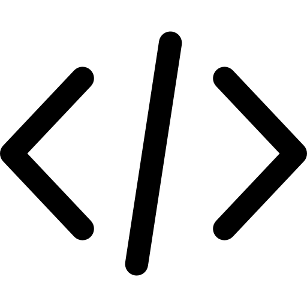

Hi, I am NullPointer8118.
About Me
Welcome to Tux & Terminal. A minimal corner on the huge internet to write about foss technology, online privacy and security, Linux, and much more.
I’m an introverted person who prefers solitude, reading, and writing in my own quiet space. I created this blog as a simple digital notebook to write about things I explore, like tech, network privacy, mental health, philosophy, and digital minimalism.
I recently saw someone asking why they should trust this blog, if it's just some hidden promotion, or where I get my information. So I want to be 100% clear: I do not make a single rupee from this site. There are no ads, no paid promotions, no referral links, and no affiliate programs anywhere here.
This website is just a fast, static page hosted openly on GitHub. There are no hidden tracking scripts, analytics, or bloat. Anyone can go check the source code on GitHub to verify that for themselves.
I don't claim to be a journalist, a scientist, or an expert with fancy qualifications. I'm just someone who reads a lot, tests out privacy tools and software on my own devices, and writes down my own experiences and thoughts. I don't plan on adding source links or references to every post because this is just my personal writing habit, not a news company.
Getting visitors on a site that has no ads, no marketing, and no SEO tricks is really hard. But I write because I genuinely love open-source software and sharing what I learn. Since I'm fairly new to blogging, I know I'm not perfect, and I always welcome honest suggestions to make the site better.
If my personal thoughts and simple write-ups aren't what you're looking for, that's completely fine—you can always skip or ignore the blog. I write purely for the joy of it, and this site will always stay a free, independent space.
Thanks for taking the time to read!
| What's Special About Tux & Terminal | |
|---|---|
| Open-Source | Passed |
| Privacy-Respecting | Passed |
| Ad-Free | Passed |
| Subscription-Free | Passed |
| No Third-Party Analytics | Passed |
| No Promotions | Passed |
Follow me here...
“It would be better if there were nothing. Since there is more pain than pleasure on earth, every satisfaction is only transitory, creating new desires and new distresses, and the agony of the devoured animal is always far greater than the pleasure of the devourer.”
“I told myself: 'I am surrounded by unknown things.' I imagined man without ears, suspecting the existence of sound as we suspect so many hidden mysteries, man noting acoustic phenomena whose nature and provenance he cannot determine. And I grew afraid of everything around me – afraid of the air, afraid of the night. From the moment we can know almost nothing, and from the moment that everything is limitless, what remains? Does emptiness actually not exist? What does exist in this apparent emptiness?”